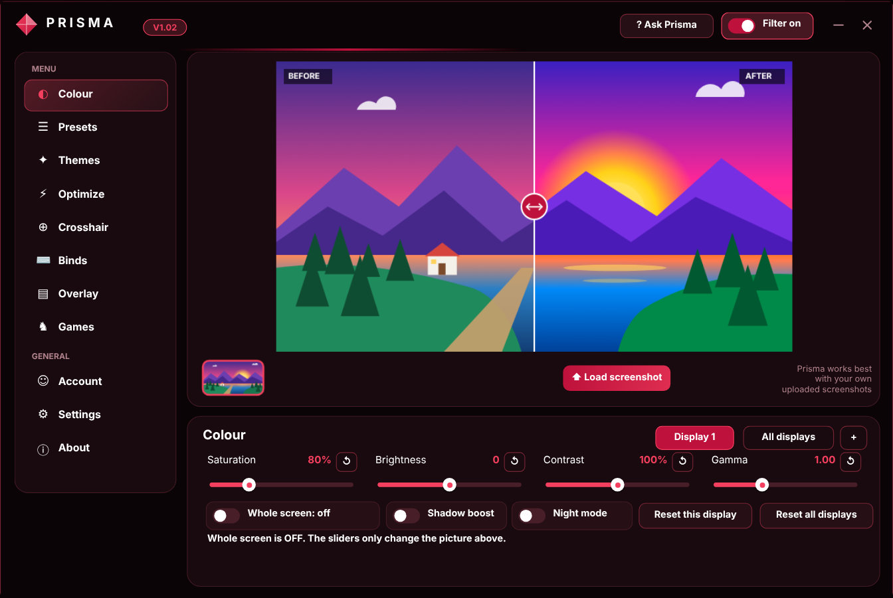
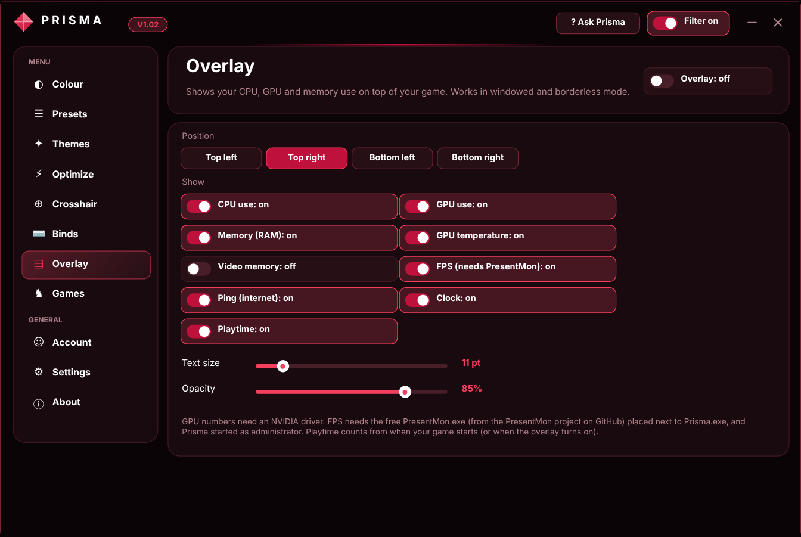

New in V1.02: shadow boost, night mode and one-click game mode. See the tools
Turn your game colours up to 300%.
Prisma is a 2.6 MB Windows app with a colour booster, your own crosshair, an FPS and ping overlay and 20+ game tweaks.

Six tools you would normally need six apps for.
Every change can be reset. Click a tool to see its real screen from the app.

Try the whole app before you download it.
The demo is a copy of Prisma that runs on this website. Move the sliders, build a crosshair and turn on the overlay.
Open the demo
Questions
Is Prisma free?
Yes. Downloading and using it is free. An account is optional and only backs up your looks.
Why does Windows show a blue warning?
Prisma is not code signed yet, so Windows does not know the publisher. Click More info, then Run anyway.
Do I need an NVIDIA card?
NVIDIA gets the most out of it. Without one, the colour boost, crosshair, overlay and optimizer still work.
How does 300% saturation work?
Up to 100% uses your NVIDIA driver. Above that, Prisma adds a Windows colour boost, which shows in windowed and borderless games.
Can I undo the changes?
Yes. Every slider has a reset, and Undo all in the optimizer puts Windows back.
Which languages does it speak?
10 languages. You can switch in Settings, and Prisma restarts in the new language.
Free, 2.6 MB, ready in a minute.
Windows 10 and 11. No account needed.